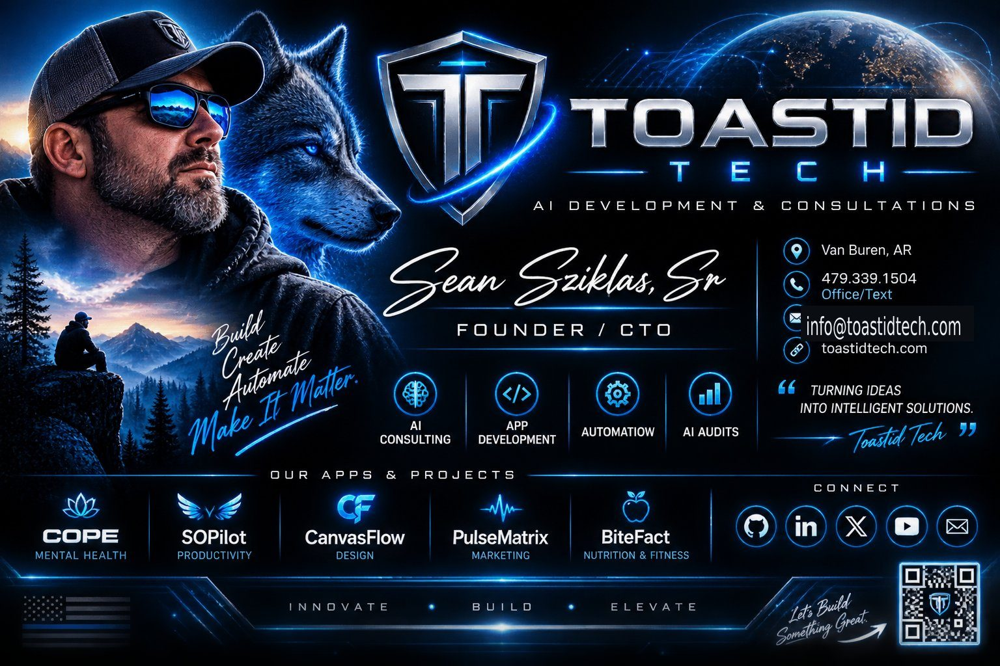

PWA · GUIDE
Why Progressive Web Apps Are Quietly Winning
Why an installable web app can be a smart fit for a small business.
Read the guide →Practical guidance for business owners who want better systems, smarter automation, useful AI, and technology that earns its keep. No buzzword bingo. No 70-page dust collectors.
Start with the problem, not the technology. These resources help you decide whether you need a PWA, an automation, an AI solution, a business audit, or simply a better process.
The best technology is rarely the most complicated option. It is the option that removes friction without creating three new problems.
For hands-on help, see our PWA development service and current apps.
Why an installable web app can be a smart fit for a small business.
Read the guide →A practical way to decide whether a PWA solves a real problem.
Read the guide →The essential pieces between an idea and a useful product.
See what we build →Need a practical assessment? See the business audit service.
Expose wasted time, operational risk, bottlenecks, and missed opportunities.
Read the guide →People, process, technology, data, and customer experience.
Read the guide →An audit should end with decisions, priorities, and next steps.
Build the plan →Ready to improve a workflow? Explore business automation consulting.
Making a bad workflow faster does not make it a good workflow.
Read the guide →Find repetitive, predictable work that steals time every week.
Read the guide →Prioritize workflows by effort, risk, frequency, and business impact.
Map opportunities →For strategy beyond the guides, see AI consulting.
Where AI can create real leverage and where it cannot.
Read the guide →A simple framework for choosing existing software, custom development, or automation.
Read the guide →Define the business outcome first. Then choose the smallest solution that can achieve it.
Find the right solution →The questions people actually ask about Toastid Tech apps — pricing, privacy, and what each one does. No sales pitch, just answers.
The week's AI headlines, translated for people who run businesses — what changed, and why it matters to you. Every story below is verified against its source. No rumor-mill headlines.
On November 17, OpenAI released GPT-6.2 Astra and GPT-6.2 Sol in ChatGPT Work and Codex for Plus, Pro, Enterprise, and Edu users, and in the API. OpenAI says Astra sets new highs on professional-work and science evals at less than a third of GPT-6 Astra's cost per task, and its API price drops 20% to $8 per million input tokens and $40 per million output. Sol stays at $2 and $10. Both models ship with tighter safeguards for higher-risk cybersecurity help.
On November 18, Google released Gemini 4 Neon, the mid-tier model in its Gemini 4 family, with a 1-million-token context window and priced at $3 per million input tokens and $15 per million output. Google says it ranks #3 overall with a score of 61 on the Artificial Analysis Intelligence Index and #1 on Zapier's AutomationBench — Google's own benchmark claims.
On November 17, Novo launched AI capabilities across banking, payroll, tax, and credit for its more than 250,000 small-business customers. Novo AI answers plain-language questions about transactions and spending, payroll covers W-2 and 1099 payments, and eligible sole proprietors and LLCs get free AI-assisted tax prep and filing. Novo says its customers' monthly spending on AI tools rose 493% between November 2024 and June 2026.
On November 17, Oregon Attorney General Dan Rayfield filed a $2.035 billion lawsuit against OpenAI in Multnomah County Circuit Court, alleging ChatGPT endangers children and that OpenAI misled parents about its safety. The suit anchors the state's new "Keeping Kids Safe" initiative and joins a string of state actions against OpenAI. The claims are allegations, not findings — nothing has been proven in court.
On November 19, Prime Intellect disclosed that an unauthorized party swapped the model behind its DeepSeek V4.1 Flash endpoint for a modified copy with refusal behavior removed. The substitute answered customer requests for 53 hours, November 8–10, matching the original on capability tests — but its safety refusals collapsed: HarmBench refusals fell from 198 of 240 prompts to zero. Prime Intellect says it found no evidence customer prompts left its cluster, and its investigation is ongoing.
On November 22, the National Governors Association released bipartisan AI principles asking Congress to set federal oversight for the most powerful AI models — including independent safety reviews and reporting of serious security breaches — while states keep responsibility for consumer protection, discrimination, and AI's effect on jobs. The principles come from a bipartisan council led by Maryland Gov. Wes Moore and Indiana Gov. Mike Braun.
Updated November 23, 2026 · Refreshed every Monday morning.

I'll help you figure out what should be fixed, automated, built, or left the hell alone.